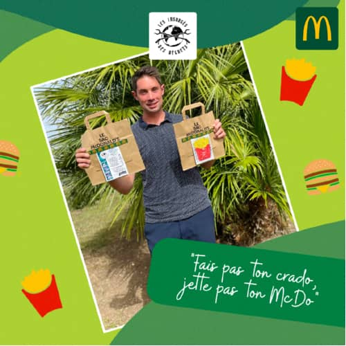

Les Insurgés
des déchets


Les Insurgés
des déchets


Prochaines actions
Bourcefranc* dans :
*Événement réservé aux adhérents
:
:
WCUD dans :
:
:
Toute l'actualité concernant nos actions de ramassage des déchets et de sensibilisation
8 juin 2025 : Bourcefranc-Le Chapus

Comme promis lors de la dernière AG, du fun, du fun, du fun au programme de ce 8 juin puisque votre association préférée organisait son tout 1er concours amical de pétanque à Bourcefranc-Le Chapus !
Une manière de se retrouver tous ensemble une dernière fois avant les vacances d'été en alliant ramassage et pétanque pour partager un bel après-midi festif entre nous !
Le bilan ici

17 mai 2025 : Marennes Ville
Samedi dernier, votre association préférée était présente à Marennes Ville pour la 3ème édition de "Faites MHB" 💚.
Une chouette occasion de ramasser et de présenter nos activités, nos bilans, nos sujets de sensibilisation sous une approche ludique pour petits et grands au sein du magnifique jardin public de la ville.
Le bilan ici

13 avril 2025 : Saint-Just-Luzac
Encore une énorme victoire et une forte mobilisation en ce dimanche 13 avril pour notre habituelle cueillette de printemps dans la ville et les bois de la Commune de Saint-Just-Luzac.
🙏 Nous tenons à remercier tous les bénévoles et notamment Caroline, fondatrice du collectif Les Échos du Mitan et insurgée à nos côtés pour l'organisation et les repérages effectués, ainsi qu'Olivier, adjoint à la mairie de Saint-Just-Luzac qui nous aide (et nous supporte 😂🤣🤪) depuis le premier ramassage.
Le bilan ici

11 avril 2025 : Assemblée Générale
Vendredi 11 avril se tenait notre assemblée générale annuelle à la salle Le Sémaphore de Bourcefranc-le-Chapus avec la présence de Monsieur le Maire Guy Proteau. Delphine Basset, Présidente, a fait le point sur une année 2024 rythmée par les sensibilisations auprès des scolaires, les participations aux ateliers déchets marins au Ministère de la transition écologique et bien sûr par les ramassages :
- 540 bénévoles ont participé aux actions collectives mensuelles qui ont eu lieu entre Port des Barques et La Tremblade
- 4,7 tonnes de déchets échoués ou abandonnés ont été ramassés, triés, évacués et/ou recyclés (dont mégots et canettes pour l'association Knet Partage)
- 35 kg de canettes
- 5,8 tonnes de déchets recensés au sein des 2 bacs à marée de l'association situés à Marennes Plage.
2025 mêlera continuité des actions et événements ludiques pour alerter sur les pollutions d'une manière différente. En effet, concours de pétanque, course de caisse à savon et jeu d'énigmes version déchets pour halloween sont au programme.
La Présidente a terminé par ces mots "1000 mercis...et on continue". Une assemblée conclue par notre traditionnel pot de l'amitié 🥂.

16 mars 2025 : Le Galon d'Or
3️⃣1️⃣ personnes dont deux enfants sont venus nettoyer la plage du galon d'or à La Tremblade/Ronce les bains Plein Phare ce dimanche au cours d’une matinée glaciale et pluvieuse. Heureusement, la bonhomie de chaque participant et le cadre magnifique 🌊🌴 nous ont permis de réchauffer nos petits coeurs 🥶 tout givrés...
La suite ici

16 février 2025 : Bourcefranc

2 février 2025 : Dépollution 100% pneus
Dimanche matin 2 février, - 1°C , brouillard, quelque part entre Arvert et La Tremblade, 1️⃣2️⃣ courageux réunis pour prélever et nettoyer 3️⃣7️⃣0️⃣ pneus abandonnés dans une pâture.
La fraîcheur de l’hiver 🥶, les gants deviennent humides pour briser la glace 🧊, les bottes sont trempées par l'eau gelée contenue dans ces morceaux de caoutchouc servant à vehiculer -
communément appelés "pneus" 🛞 le soleil 🌞 se fraie un chemin pour redonner des couleurs à nos teints blafards...
La suite c'est ici

19 janvier 2025 : Port des Barques
Une belle action de nettoyage du littoral encore ce dimanche, sous le soleil avec 4️⃣5️⃣ personnes merveilleuses. Nous étions sur la zone Nord de Montportail, derrière les cabanes et les claires ostréicoles entre Saint Froult et Port-des-Barques.
Un paysage magnifique mais malheureusement jonché de plastiques après les grandes marées.
Le bilan (désastreux) ici
14 Décembre 2024 : Troc ton jouet
Votre association préférée et l’association de parents d'élèves Optimômes s’unissent pour un Noël 🎅 solitaire et éco-responsable en organisant à Marennes Ville un "Troc ton jouet" !
Quelques chiffres effarants :
⚠️ 7 jouets sur 10 sont inutilisés après 8 mois !
⚠️ 66% des jouets finissent dans les déchèteries enfouis ou brûlés voire dans les océans 🌊 !
⚠️ Selon l'Ademe, près de 100.000 tonnes de jeux et de jouets sont jetées à la poubelle chaque année !
🔜 Donc nous agissons, et mettons en place cet évènement.
Voici les dates et ieux de dépôts de jouets (en bon état et inutilisé chez vous) :
- MER 20 NOV 8h40-9h École maternelle
- MER 20 NOV 8h50-9h École Élémentaire
- SAM 23 NOV 9h-12h Halles du marché
- DIM 1er DEC 15h-18h Boum de Noël au Cal
et rendez-vous le 1️⃣4️⃣ décembre lors de "Lutins en lumière" place Chasseloup à Marennes pour venir en choisir un autre (sur présentation de votre ticket de dépôt)
Allez c’est parti pour un NOËL écologique, économique et joyeux 😁
Plus d'infos ici
24 novembre 2024 : Marennes/Bourcefranc
♻️ Pour la semaine européenne de réduction des déchets, nous vous proposions un nettoyage du littoral avec les associations suivantes : la Gym de Bourcefranc, le Lions Club Marennes et l’association des Résidents de Marennes Plage.
🔜 Rdv programmé le dimanche 24 nov 10h place de l’Amer 50 avenue William Bertrand à Marennes plage 17320. Un ramassage incroyable, une matinée de folie ! 🤪 Nous ne touchons plus terre depuis ! Quelle énergie, quelle vague de bonheur et de positivité !
Merci à vous tous de nous faire vivre ces émotions. 🙏
Le résumé c'est ici

18 novembre 2024 : Sensibilisation école de Marennes
Quelle "claque d'espoir" d'avoir pu intervenir auprès des CM1 de l'école élémentaire Henri Aubin de Marennes Ville ce lundi !
Nous leur avons notamment présenté notre association, les effets de la pollution sur notre environnement, la sur-consommation, le pouvoir de devenir une ou un petit colibri et le tri des déchets lors d'un rallye effréné (bravo la team des filles 💪) !
Chaque enfant repart avec son diplôme de gardien(ne) de la planète 💚🌍.
Merci aux enfants, à Mme Joncour et Monsieur Le Directeur de nous avoir offert cela. C'est Noël avant l'heure pour nous, mille mercis pour ce cadeau 🎁 🙏🏻
Plus d'infos ici
20 octobre 2024 : L'île Madame
Une première sur l'île Madame pour notre association en pleine semaine des grandes marées ! Rendez-vous était donné sur le parking de la passe aux boeufs à Port des Barques à 10h. Malgré une météo mitigée, une quarataine de personnes sont venues en découdre avec les déchets. Une journée placée sous le signe de la bonne humeur, du partage et de la bienveillance.
Le bilan ici
25 septembre 2024 : Performance et Développement Durable
Performance et développement durable : entreprendre autrement en Charente Maritime !
Pour la journée anniversaire des Objectifs de Développement Durable (#ODD) et la semaine européenne du sport #BeActive , notre association a participé à un évènement unique au Shapers Club à Marennes.
Le compte-rendu ici
21 septembre 2024 : WCUD 2024
4ème participation au World Cleanup Day - France pour votre association préférée !
Retour à Ronce les Bains ⛱️ (ville, plage et forêt) ! Rendez-vous était donné sur le parking du casino de ronce les bains/la tremblade 46 Avenue de la Chaumière, La Tremblade, France à 10h sous une météo capricieuse. Alors ? Combien de mégots ramassés ? Combien de kilos de déchets par rapport à l'année dernière ?
Toutes les infos ici
16 Juin 2024 : La Palmyre se jette à l’eau
1er Juin 2024 : Mégothon La Tremblade
Pour la journée mondiale sans tabac / journée de ramassage et de sensibilisation à l'impact des mégots jetés au sol / veille de notre Mégothon à La Tremblade, nos bénévoles se sont mobilisés aux abords de plusieurs établissements scolaires (écoles, collèges et lycée) du bassin de la seudre pour distribuer gratuitement + de 2️⃣0️⃣0️⃣ cendriers de poche aux adultes et sensibiliser à la pollution des mégots. Puis le samedi 1 er Juin, nous avons pu sensibiliser 200 personnes sur le marché de la Tremblade et ramasser
4 000 mégots soit sauver plus de 2 000 000 de litres d’eau (potentiellement potable) !
Toutes les infos ici

18 mai 2024 : Marennes Ville
1er mai 2024 : Base aérienne école Rochefort / BA 721
Nous avons eu l'honneur d'accueillir les 160 élèves militaires VOLONTAIRES de la Base aérienne école Rochefort / BA 721 accompagnés du Monsieur le Général de brigade aérienne Hervé Chêne, commandant la base aérienne 721 et l’école de formation des sous-officiers de l’armée de l’Air et de l’Espace, de la Capitaine Maryse, de la Caporal-chef Katia et de leurs familles.
🙏 Nos superbes bénévoles ont joué le rôle d'encadrants à merveille pour mener les apprentis ramasseurs sur la trace des déchets disséminés sur le littoral.
Toutes les infos ici
22 mars 2024 : Atelier sur les déchets marins
Quelle fierté et quel honneur pour votre association préférée d'être conviée à l'atelier sur les déchets marins vendredi dernier au Ministère de la Transition Écologique !
Des avancées majeures européennes sont en cours sur la réglementation des emballages à usage unique et sur la filière rep des déchets liés à la pêche.
Le bilan ici
17 mars 2024 : Ronce les Bains
11 février 2024 : St Froult/Port des Barques
Direction St Froult (17780) et Port des Barques (17730) pour nettoyer le littoral à partir du site ostréicole de Montportail sur les conseils avisés de La société Téo qui gère les bacs à marée installés sur ce site.
Le bilan (désastreux) ici
14 janvier 2024 : Le Petit Louis
"Le Petit Louis", c'est l'histoire d'un jeune garçon de 7 ans qui ramasse les déchets sur les rivages et les plages de notre si belle planète. Un jour d'été, il se rend compte qu'il lui faut un bac à marée pour y stocker tous ces immondices. Un rêve qui va se réaliser ce 14 janvier. Au programme : ramassage sur le littoral bourcefrançais, inauguration du bac à marée puis pot de l'amitié.
Rdv 14h Skatepark Parking Kennedy - 17560 Bourcefranc-Le Chapus
Le bilan ici
3 décembre 2023 : Ville Propre
Pour le dernier ramassage de l'année, vous êtiez conviés pour donner un coup de mains aux Alvertonnes et Alvertons membres du Conseil Municipal des Jeunes! Au programme, plusieurs spots à nettoyer : dans les bois ou en ville selon votre appétence pour Dame Nature.
Rendez-vous 9h30: Parking des Écoles, 51 Rue du Bourg, 17530 Arvert
Le bilan ici

26 novembre 2023 : Les Gardiens de la Plage 3
Retour sur notre opération "Les Gardiens de la Plage 3" 🦸♂️🦸♀️🏖️🦀 à Marennes Plage. Pour clôturer la semaine Européenne de la réduction des déchets, rdv était donné à 9h45 ⏰ place de l'Amer. Une nouvelle fois, petits et grands ont répondu présents à notre appel. 🤗 C'est en effet 80 personnes (dont plusieurs enfants) qui sont venues nous aider à nettoyer le littoral de l'école de voile de Bourcefranc-Le Chapus jusqu'au pied du pont de la Seudre.
Le bilan ici
8 octobre 2023 : Gatseau IO
L’adage « ensemble, on est plus fort » s’est encore confirmé ! Une 50taine de personnes sont venues nettoyer la plage de Gatseau. Un événement organisé par nos deux associations :
- Ile d Oléron: Tous à la ramasse? implantée et très active sur l’île d’Oléron depuis quelques mois et votre association préférée avec des adhérents même venus d’Etaules, notre super héros 🦸🏻♂️ Louis avec sa famille, nos habitués et de nouvelles recrues.
Et Les Ânes d'Oléron Ehop et Fidèle ont magnifié l’opération en transportant les déchets jusqu’au parking 🅿️
Le bilan ici
16 septembre 2023 : WCUD 2023
3ème participation au World Cleanup Day - France pour votre association préférée !
Retour à Ronce les Bains ⛱️ (ville, plage et forêt) ! Rendez-vous était donné sur le parking du casino de ronce les bains/la tremblade 46 Avenue de la Chaumière, La Tremblade, France à 09h30. Nous avions également un stand de sensibilisation Place Brochard. Alors ? Combien de mégots ramassés ? Combien de kilos de déchets par rapport à l'année dernière ?
Toutes les infos ici

7 septembre 2023 : Partenariat McDonald’s™ Marennes
Tous les consommateurs ne sont pas des pollueurs ! Pour les autres, on a fait des flyers en partenariat avec McDonald’s™ Marennes. Ils seront distribués sur les sacs du restaurant avec ce slogan : "FAIS PAS TON CRADO, JETTE PAS TON MCDO !". Le restaurant attache une grande importance à la propreté de Marennes notamment grâce à leur superbe vélo Cargo 🚲 utilisé le plus souvent possible pour le ramassage des déchets.
11 juin 2023 : Cavalcade
Ce dimanche 11 juin, votre association préférée a défilé pendant plus de 2h pour la cavalcade des 115 ans de la Commune de Bourcefranc le Chapus (17).
Un immense merci à notre super beau char Les Ânes d'Oléron conduit par Nicolas, Oriane sans oublier leur belle chèvre Régine 🐐 .
Ils nous ont accompagnés sous le soleil jusqu’au port du chapus.
Un défilé haut en couleurs et en déchets avec les superbes déguisements de tous les amis engagés pour la planète.
Plus d'infos ici
31 mai 2023 : Planète Propre
Le mercredi 31 mai, de 14h à 17h, la Ville d’Aytré a organisé une opération de ramassage des déchets
intitulée "Planète Propre" en invitant les citoyens (petits et grands) à se mobiliser afin d’agir pour rendre leur environnement plus sain. Un événement initié par notre association, relayé par l’association Les Maires pour la Planète et mis
en oeuvre par les services de la Ville d'Aytré !
Toutes les infos ici
5 Mai 2023 : Assemblée Générale
Une quarantaine de personnes sont venues assister à notre deuxième Assemblée Générale à Bourcefranc-Le-Chapus. Celle-ci s'est déroulée en présence du Maire de Bourcefranc-Le-Chapus, Monsieur Guy Proteau et de Madame le Maire de Arvert, Marie-Christine Peraudeau ainsi que d'autres élus de la CDC. Ramasser, Sensibiliser, Fédérer, Alerter, Communiquer resteront plus que jamais nos valeurs pour la suite de l'année 2023. Au programme : dépolluer de nouvelles zones et continuer d'éveiller les consciences.
Le renouvellement du bureau a donné lieu à 2 changements : l'arrivée de Rachel Dupont au poste de trésorière et la nomination de Laurence Guillaume au poste de secrétaire adjointe.
Une assemblée conclue par notre traditionnel pot de l'amitié 🥂.
30 avril 2023 : Baie Watch
24 avril 2023 : Cueillette de printemps 2
Rdv Place de Verdun à Saint-Just-Luzac à 10h pour une "Cueillette de printemps" dans les bois ! Ce fut une superbe occasion de compléter votre herbier avec des espèces improbables et des spécimens spottés sur l'application Trash Spotter qui n'avaient rien à faire dans la nature 🙄. Gants 🧤, vêtements adaptés à l'environnement hostile (genre les ronces 🌵😜) étaient de sortie.
Toutes les infos ici
11-12 février 2023 : Trash Lover

29 décembre 2022 : Enquête Vakita
Après une alerte envoyée au média indépendant Vakita, le reportage concernant le déversement de près de 2000 tonnes de déchets dans les marais à Bourcefranc-le-Chapus est sorti. La zone est protégée et considérée comme un site Natura 2000. Soit un lieu classé afin de préserver une biodiversité spécifique. Une ancienne décharge a été vidée de ses déchets pour la construction d'un parking de supermarché sur la zone artisanale du riveau. La terre polluée et les déchets âgés de plusieurs décennies ont été déplacés et partiellement enfouis sous terre, proche de parcs à huîtres. Un désastre écologique ! Martin Lavielle et Margaux Brique, les deux journalistes nous ont sollicité pour les guider sur place et pour enquêter sur ces déchets en pleine nature. Nous ne pouvions pas fermer les yeux sur cette situation.
L'enquête est à découvrir ici
17 Décembre 2022 : Stand de Noël
Oh Oh Oh 🎅! Nous avons tenu un stand de Noël un peu particulier 🤪😜🌍💚 place chasseloup à Marennes (17320)
- De 15 h à 17h les enfants ont pu profiter de notre RECUP’DON (jouets neufs ou pouvant servir, ayant été jetés par des adultes (les méchants) dans la nature, mais ramassés et choyés par d’autres adultes (les gentils : c’est nous, bien sûr 🙄) ! Objectif : le don, le partage, l’authenticité… (les vraies valeurs à la base de Noël quoi 😐 🎅🏻)
- À partir de 18h nous avons déambulé avec nos déguisements de déchets délirants jusqu’au port où la mairie a tiré un feu d’artifice 🎇 🧨 (nous n'avons pas ramassé pas les restes, dans l’eau à l’issue, par contre…😈😈)
Plus d'infos ici
4 décembre 2022 : Bilan "Marais Propre"
Pour le dernier ramassage de l'année, les Alvertonnes et les Alvertons ont répondu présents à notre appel pour donner un coup de mains à nos fidèles bénévoles du bassin de Marennes ! C'est en effet 35 personnes (dont plusieurs enfants membres du conseil municipal des jeunes 🦸🦸♀️) qui sont venues nous aider à nettoyer 4 spots répertoriés : les bois de la passe de Villeneuve, de la passe à Louis, de la passe des 5 gendres et le "dépotoir" proche du stade de foot.
Le bilan, c'est ici
27 novembre 2022 : Bilan "Les Gardiens de la Plage 2"
Retour sur notre opération "Les Gardiens de la Plage 2" 🦸♂️🦸♀️🏖️🦀 à Marennes Plage. Pour clôturer la semaine Européenne de la réduction des déchets, rdv était donné à 10h ⏰ place de l'Amer. Une nouvelle fois, petits et grands ont répondu présents à notre appel. 🤗 C'est en effet 80 personnes (dont 20 enfants) qui sont venues nous aider à nettoyer le littoral de l'école de voile de Bourcefranc-Le Chapus jusqu'au pied du pont de la Seudre.
Le bilan, c'est ici
29 octobre 2022 : Bilan "Urgence à Bonne Anse"
La commune des Mathes/La Palmyre et 7 structures professionnelles et associatives se sont unies pour une opération de nettoyage de la baie. Nous y étions évidemment. Plus d'une centaine de participants courageux venus pour tenter d'éradiquer une zone d'accumaltion de déchets ! Une mobilisation incroyable pour un bilan colossal !
Le bilan, c'est ici
22 octobre 2022 : "Cradoween"
Les Insurgés ont fêté Halloween en mode crado ! Au programme : un ESCAPE GAME dans les bois hantés par des créatures maléfiques ! 6 équipes sont venues frissonner dans les bois et dans le noir ! Un événement très vite complet & ultra confidentiel à Bourcefranc-Le chapus. Départ différé toutes les 20 minutes par équipe. Participation libre pour soutenir notre association. Il n'y aura aucun compte-rendu ici car ce qui se passe dans les bois de bourcefranc reste dans les bois de bourcefranc. Y compris quelques âmes perdues ce samedi soir...Rendez-vous est déjà pris pour l'année prochaine le 28 octobre 2023 à 20h00.
Plus d'infos ici

9 octobre 2022 : Bilan "À la faveur de l'automne"
3 octobre 2022 : Sensibilisation école de St Sornin
25 élèves de l'école des explorateurs à qui nous avons présenté notre association, l’importance du tri, du recyclage ♻️, du don, des effets de la pollution sur notre environnement, les animaux…l’urgence à agir même par de petits gestes (les fameux 6 R). Nous avons même rajouté le R de respecter les agents municipaux, le R de ramasser, le R de réprimandable... Bref, une journée extraordinaire en leur compagnie.
Plus d'infos ici
17 septembre 2022 : WCUD 2022
2ème participation au World Cleanup Day - France pour votre association préférée !
Cette fois-ci à Ronce les Bains ⛱️ (ville et plage). 60 participants 💪 sont venus nettoyer la planète. Une ambiance de folie ⚡ en cette belle matinée ensoleillée. Un accueil 5 ⭐⭐⭐⭐⭐ organisé par le Casino Partouche La Tremblade / Ronce les bains (Merci M. le Directeur et son équipe). Un partenariat efficace avec la mairie de La Tremblade/Ronce les Bains et l'ONF 🙏 .
Le bilan, c'est ici
23 août 2022 : Partenariat avec Trash Spotter
L'application collaborative Trash Spotter permet d'agir au quotidien par des gestes simples à fort impact environnemental et social.
Chaque citoyen est invité à télécharger cette application sur son téléphone portable afin de répertorier les déchets en temps réel lors de leurs promenades. Chaque signalement de déchets et ramassage enregistrés dans l'appli permettent de collecter de l'argent au profit d'associations qui agissent à leur tour (comme la nôtre par exemple😉).
Plus d'infos ici

5 juin 2022 : Journée mondiale de l'environnement
Dans le cadre de la Journée mondiale de l'environnement 2022, nous étions présents à Marennes-Plage (17320). Notre stand 🏠 , nos fidèles ramasseurs 💪, nos créations artistiques issues des déchets récoltés 💥 , nos gros mégots pour rendre visible l'invisible 🚬, notre land art imaginé par Sabine et réalisé avec l'aide de plusieurs enfants...Bref, une journée inoubliable de 10h à 18h pour aller notamment à la rencontre du public afin de distribuer les cendriers de poche réalisés en partenariat avec la ville de Marennes.
Plus d'infos ici
21 mai 2022 : Bilan "Game Day"
Ce samedi 21 Mai à 14h place Chasseloup-Laubat, l’association de foot US MARENNES ⚽️ et les insurgés des déchets ont uni leurs forces pour la planète.🌍💚 4 groupes de jeunes footballeurs encadrés par des seniors du club et par votre association préférée partaient à la conquête des déchets dans la ville de Marennes. Des lots étaient à gagner pour les plus courageux, le goûter était offert. Enfants, parents, toutes et tous étaient mobilisés pour le match le plus important de l'année !! Bientôt le bilan !
Le bilan, c'est ici
18 mai 2022 : Bilan "Dépollution sur rives"
Rendez-vous était donné mercredi 18 mai à 14h 🕑 devant le camping des sablons à Vergeroux (17) pour dépolluer les rives de la Charente avec les associations Wings of the Ocean, Unis-Cité Rochefort et les éco-délégués du lycée Merleau-Ponty de Rochefort. Un dispositif d'envergure pour une pollution plastique d'envergure. Un formidable accueil de la part de la municipalité du Vergeroux. Bientôt le bilan !
Le bilan, c'est ici

14 mai 2022 : Festival VOLT FACE
Votre association préférée était présente au festival VOLT FACE à Marennes (17) le 14 mai ! Nous tenions un stand le matin au sein du village associatif place du marché où vous avez pu notamment contempler des dessins créés par les enfants et ados de Marennes et Nieulle sur Seudre. L'après-midi à partir de 14h30, rdv était donné sur le parking de la bigaille pour déambuler dans Marennes et graffer des messages anti-pollution sur les bouches d'égouts de la commune. Une activité pour petits et grands !
Plus d'infos ici
1 mai 2022 : Bilan "Fleurs de l'amer"
10 avril 2022 : Bilan "À l'abordage"
Alors « c’est l’histoire d’un mec 😎 »(vous l’avez la référence ?), donc c’est un jeune homme qui nous contacte sur Instagram pour nous dire qu’il y a des déchets près de chez lui dans une écluse du canal de Charras près de Muron (17). Un appel à l'aide qui a trouvé écho auprès de la team Insurgés ! Jusqu'ici tout va bien...
La suite, c'est ici

4 avril 2022 : Bilan "Cueillette de Printemps"
Les Insurgés en mode nettoyage de printemps pour un retour dans les bois de Saint-Just-Luzac. Une année s'est écoulée entre le tout 1er ramassage sur la même zone et pourtant nous avons réussi à dénicher de nouveau des déchets sauvages. Merci à tous les fidèles venus en ce lundi.
Le bilan, c'est ici
1er Avril 2022 : Assemblée Générale
Une quarantaine de personnes sont venues assister à notre première Assemblée Générale à Bourcefranc-Le-Chapus. Celle-ci s'est déroulée en présence du Sénateur de la Charente-Maritime, Monsieur Mickaël Vallet, du Maire de Bourcefranc-Le-Chapus, Monsieur Guy Proteau et de Madame le Maire de Marennes-Hiers-Brouage, Claude Balloteau ainsi que d'autres élus de la CDC. Au début de cette réunion, des kits écocitoyens ont été distribués à quelques jeunes de la commune en récompense de leur action de ramassage de déchets autour de leur aire de loisirs. Action, engagement et convivialité resteront plus que jamais nos valeurs pour 2022. Au programme : dépolluer de nouvelles zones et continuer d'éveiller les consciences.
20 mars 2022 : Plaidoyer #OnEnParlePas
Nous, Les Insurgés des déchets, association engagée au quotidien dans la protection de l’environnement et le ramassage des déchets abandonnés, rejoignons le mouvement apolitique #OnEnParlePas pour appeler les candidats à l'élection présidentielle 2022 à s'engager fermement et publiquement sur des mesures concrètes à la hauteur de la pollution généralisée des écosystèmes, notamment par les déchets plastiques.
Plus d'infos ici
6 mars 2022 : Bilan "Alerte à l'Embellie"
Les Insurgés on traversé la Seudre pour la seconde fois cette année ! Direction la plage de l'Embellie avec le soutien des élus de la Commune de La Tremblade. Un énorme merci à tous les bénévoles venus en ce dimanche matin. Une forte mobilisation avec nos fidèles adhérents et de nouvelles personnes venues de la presqu’île d’Arvert.
Le bilan, c'est ici
1er mars 2022 : Plateforme Zéro Déchet Sauvage
Sur l'inivitation du Ministère de la Transition Écologique, notre association est désormais référencée comme un acteur souhaitant contribuer à la réduction des déchets sauvages dans les milieux naturels (mer, littoraux, rivières, montagnes). Nos bilans de ramassage figureront à présent sur la plateforme "Zero Déchet Sauvage" afin de répertorier, quantifier et contribuer à la réduction des déchets dans les milieux naturels.
Plus d'infos ici
20 février 2022 : Bilan "Les gardiens de la plage"
Malgré un temps plus qu'incertain, la mobilisation des bénévoles est encore au rendez-vous en ce dimanche matin ! Un énorme merci aux associations participantes : le Lions Club Marennes, l’association des résidents de Marennes Plage, l’association de la gym volontaire de bourcefranc. Mille bravos à vous tous, venus du coin mais aussi de l’île d’Oléron, de Rochefort, de la presqu’île d’Arvert… Nous avons distribué un diplôme et un kit zéro déchet réalisé par nos petites mains aux enfants.
Le bilan, c'est ici
06 février 2022 : Bilan "Alerte à St-Froult"
26 janvier 2022 : Article Le Parisien
Le journal quotidien Le Parisien a consacré un article sur nos actions et notre stratégie de communication. Le titre de l'article : "Charente-Maritime : contre les déchets, ces «insurgés» s’arment d’humour et de vidéos".
Merci à Fabien Paillot pour son soutien et son intérêt envers notre association.
L'article est à découvrir ici

2 janvier 2022 : Bilan "Détox de plage"
14 décembre 2021 : Remise d'un don de la part du Lions Club de Marennes
Delphine Basset et Raphaël Couillaud ont eu le grand honneur de représenter l'association pour la remise d'un don de la part du Lions Club de Marennes. Une cérémonie en présence du Gouverneur du district Centre-ouest pour nous remercier de notre engagement au profit de l'environnement.
10 novembre 2021 : Reportage France 3 Nouvelle Aquitaine
Au cours du ramassage à Nieulle-sur-Seudre, une équipe de France 3 Nouvelle Aquitaine nous a rejoint afin de suivre nos actions et de nous interroger sur notre stratégie de communication. Le titre du reportage : "Environnement : “Déchets connectés”.
Le 15 novembre, ce sujet a fait l'objet d'une diffusion nationale au sein du journal des talents de France 3.
Le replay du 10 novembre est à découvrir ici ou directement sur notre page Facebook .
21 octobre 2021 : Cleanwalk KPMG Niort
Nous avons eu l'honneur d'être sollicités par la société Lakaa afin d'organiser une session de ramassage de déchets et de sensibilisation pour le bureau de KPMG Niort. Cette cleanwalk a eu lieu le jeudi 21 octobre dans la cadre de la journée de l'engagement responsable de KPMG France.
Plus d'infos ici
11 octobre 2021 : Intervention école de Nieulle-sur-Seudre
3 classes de 20 élèves à qui nous avons présenté notre association, l’importance du tri, du recyclage ♻️, du don, des effets de la pollution sur notre environnement, les animaux…l’urgence à agir même par de petits gestes (les fameux 6 R). Nous avons même rajouté le R de respecter les agents municipaux, le R de ramasser, le R de réprimandable... Bref, une matinée extraordinaire en leur compagnie.
Plus d'infos ici